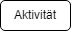
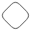
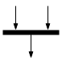
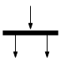

Aktivitätsdiagramme helfen Organisationsmitgliedern auf Geschäfts- und Entwicklungsseite, eine gemeinsame Basis zu finden, um dieselben Prozesse und Verhaltensweisen zu verstehen. Für die Erstellung eines Aktivitätsdiagramms stehen Ihnen spezielle Symbole zur Verfügung, z. B. für den Start, das Ende, die Zusammenführung und die Aufnahme von Ablaufschritten, auf die wir in diesem Leitfaden zu Aktivitätsdiagrammen genauer eingehen.
| Bild | Name | Erklärung |
|---|---|---|
| Anfang | Hier beginnt die Aktivität | |
| Ende | Hier endet die Aktivität | |
|  | Aktivität / Aktion | Was passiert hier? |
| Konnektor | Verbindet Aktivitäten / Aktionen | |
|  | Entscheidung | Wenn man zwischen verschiedenen Folgeaktivitäten/-aktionen entscheiden muss. |
|  | Verbindung | Wenn zwei Aktionen erfüllt sein müssen, damit es weitergeht. |
|  | Verzweigung | Wenn nachfolgend zwei verschiedene Aktionen ausgeführt werden. |
| Abbruch | Aktion wird abgebrochen |